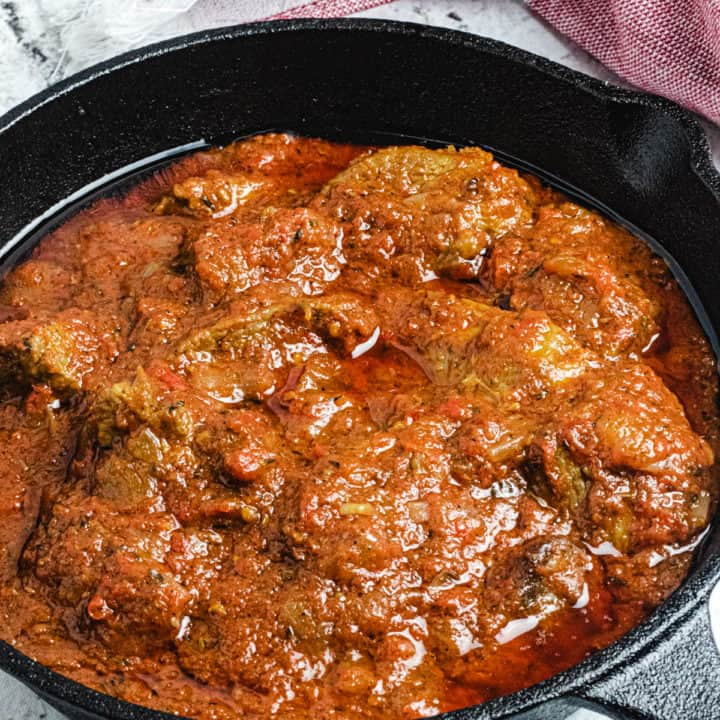

African Beef Stew Recipe

African Beef Stew is a mouthwatering West African stew
made with blended tomatoes, red bell peppers, and habanero
peppers and spiced to perfection. It is so versatile and is
amazing with so many different dishes!
ingredients
To boil Beef
- 1 lb beef
- 1.5 cups water
- 1 teaspoon black pepper
- ½ teaspoon salt
To make Stew
- 3 plum tomatoes
- 1 red bell pepper
- 1 habanero pepper
- 1 onions
- ½ cup olive oil
- ½ cup beef stock/broth
- 1 tablespoon bouillon powder
- ½ teaspoon thyme
- ½ teaspoon black pepper
- ½ teaspoon curry
- salt to taste
Instructions
To boil beef
- Wash beef and place in pot.
- Add water, salt, black pepper
and bring to a boil.
- After its boils, stir together
and let cook for 20-25 minutes.
To make stew
- Blend the tomatoes, bell pepper,
habanero pepper, and half an onion
together.
- Chop the other half of the onion.
- Pour olive oil in the pan and when it's heated,
add the chopped onions and stir till wilted
- Add the blended tomato and pepper mixture and black pepper and stir.
- Boil for 5 minutes on medium heat.
- Add the beef and ½ cup of stock and mix together.
- Add a little more broth if needed, till it has enough of a stew-like consistency.
- Add the thyme, bouillon powder, and curry. Taste for salt before adding any.
- Cover and let simmer for 10 minutes on medium-low
heat.
- Serve and enjoy!